Genuine local wheel installation, cached dependencies, copied isolated engineering workspace; no model/compiler or engineering dispatch.
Status: pass
Installed frontend loads with native HttpOnly session and Workflows control.
Expected: Native session bootstrap and workspace entry.
Actual: Installed frontend loads with native HttpOnly session and Workflows control.
raw 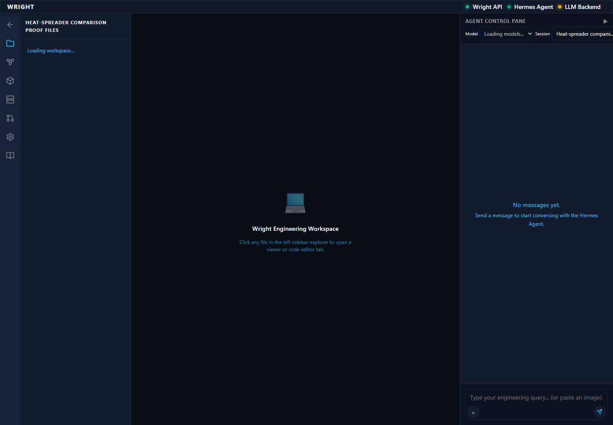
annotated 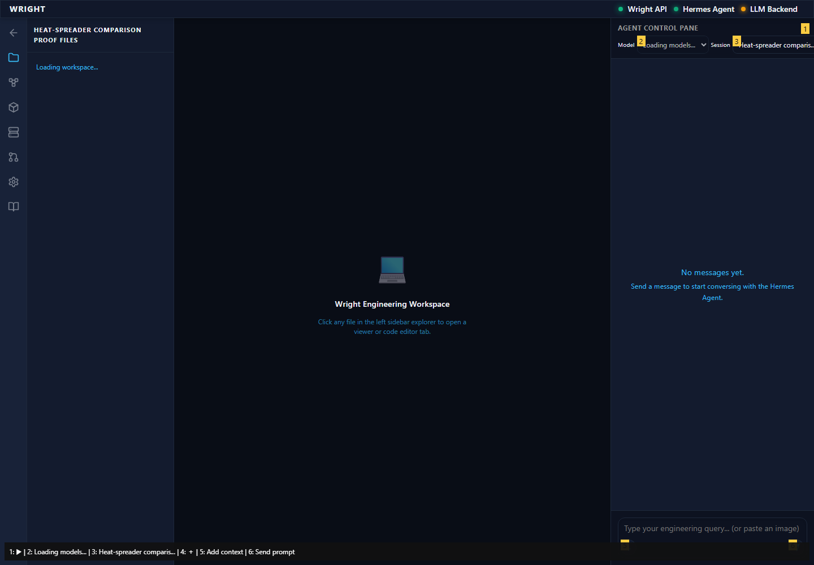
Workflow file menu and editor open within the installed workspace.
Expected: Existing editor in workspace.
Actual: Workflow file menu and editor open within the installed workspace.
raw 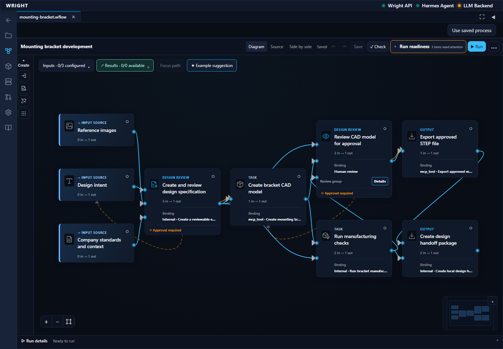
annotated 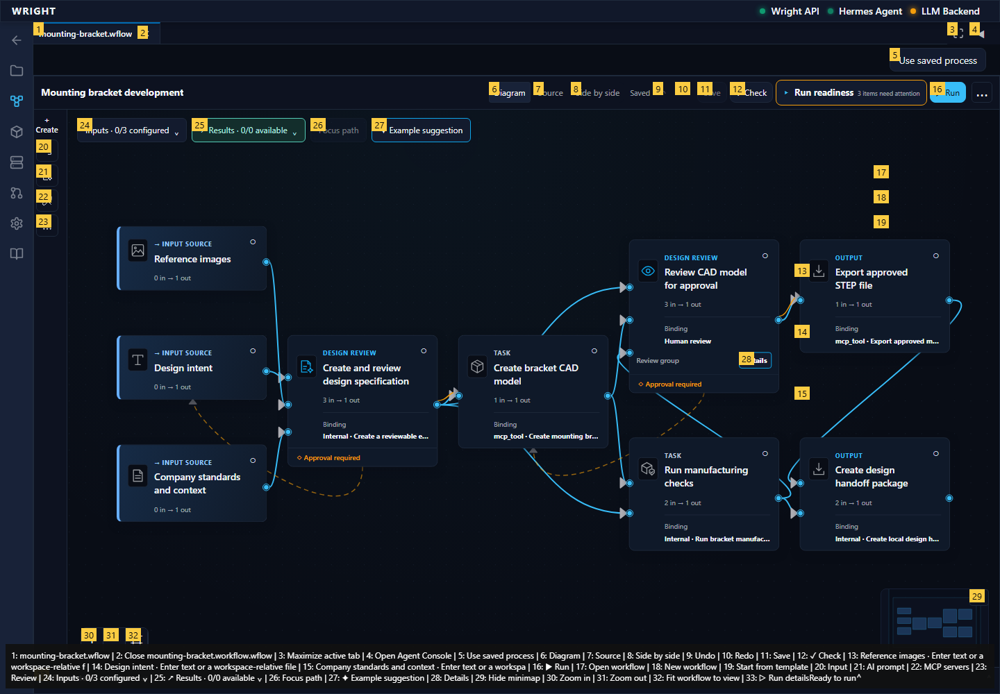
Accepted wheel workflow appears in the installed file chooser.
Expected: Exact accepted wheel source offered.
Actual: Accepted wheel workflow appears in the installed file chooser.
raw 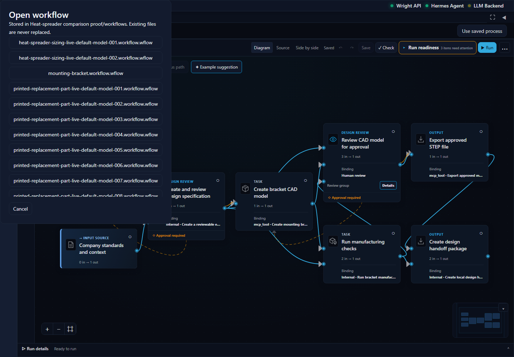
annotated 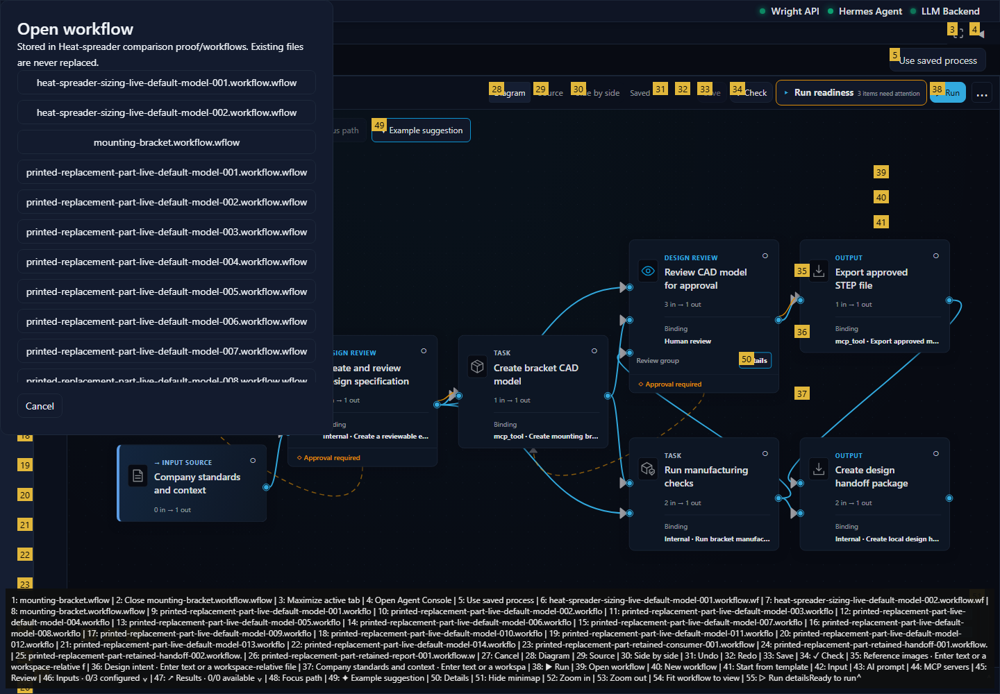
The original review/repair/slice source is open with Use saved process enabled.
Expected: Same accepted source in diagram and working view.
Actual: The original review/repair/slice source is open with Use saved process enabled.
raw 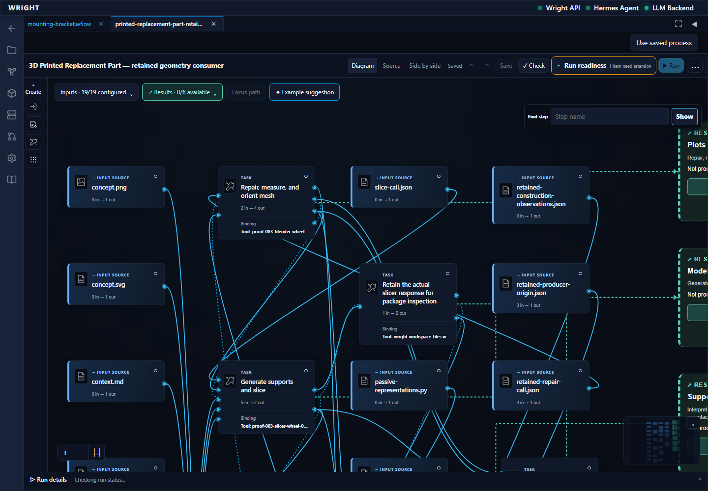
annotated 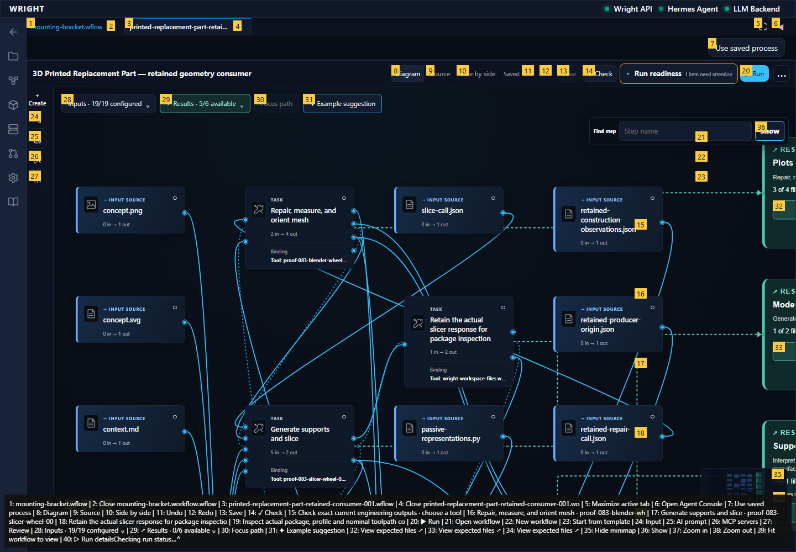
Installed shared common view opens without starting another run.
Expected: Common view opens as a workspace tab.
Actual: Installed shared common view opens without starting another run.
raw 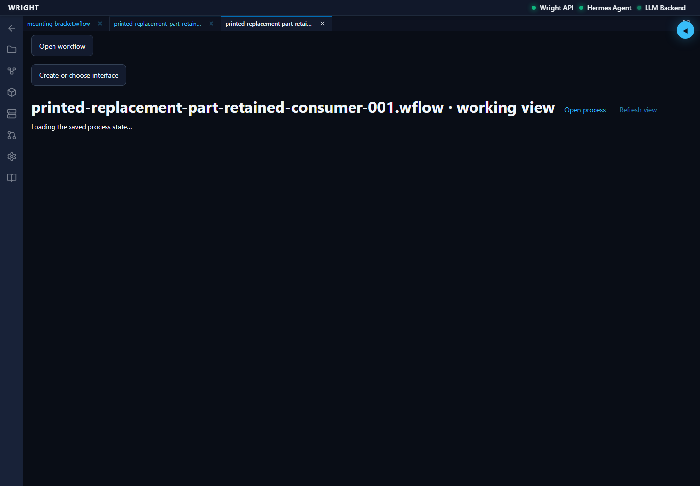
annotated 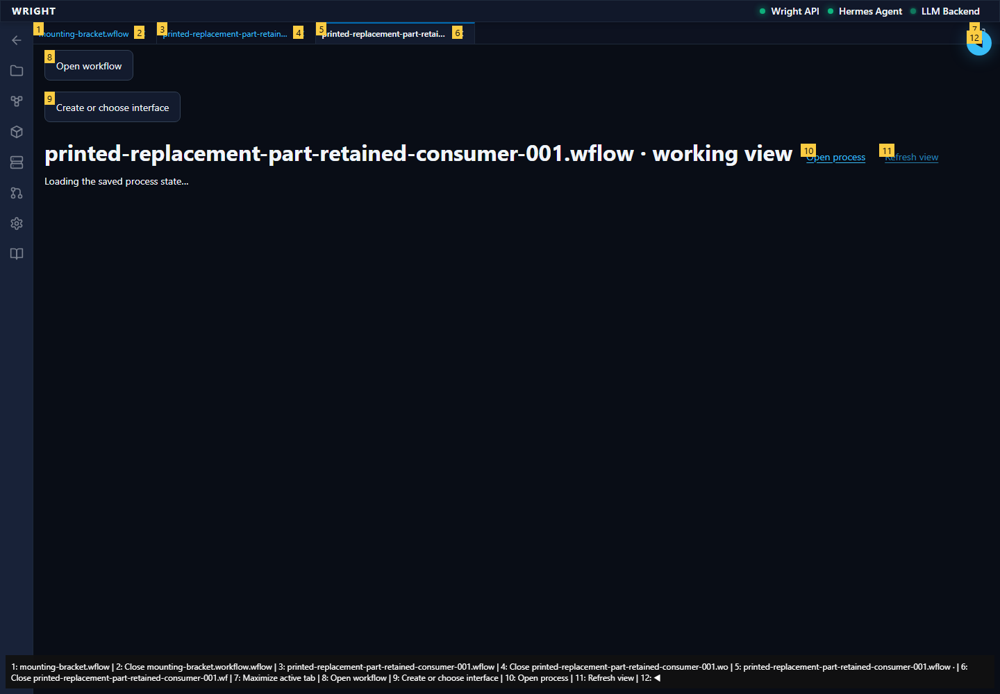
Common view shows the same second run and pending geometry-basis review.
Expected: Existing second run remains at its declared review.
Actual: Common view shows the same second run and pending geometry-basis review.
annotated 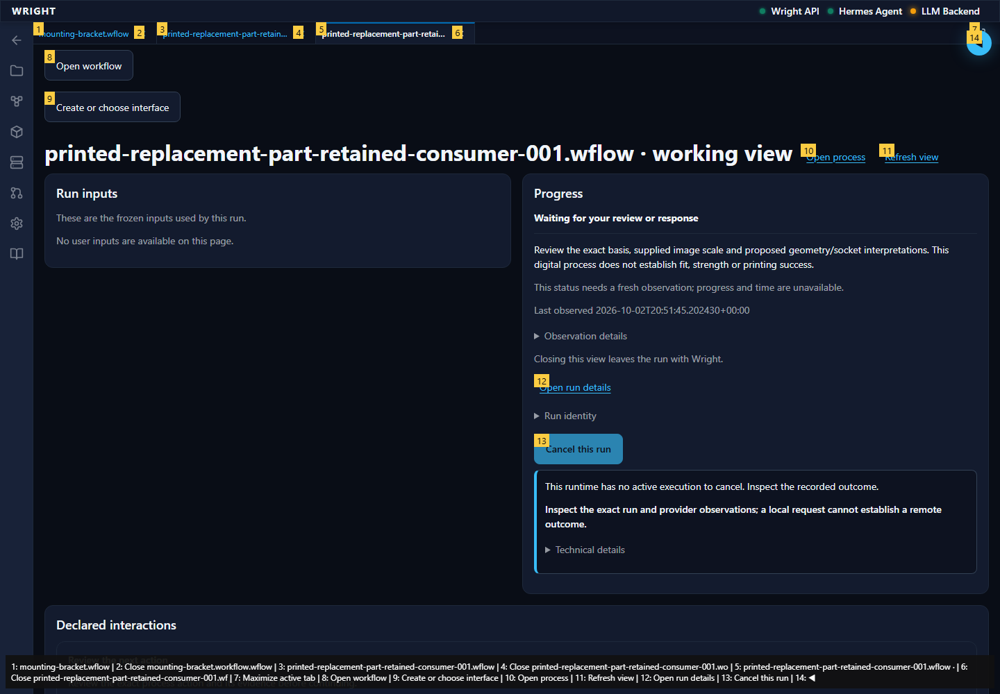
Compiler unavailable is explicit and the saved interface chooser remains usable.
Expected: Unavailable compiler explained; saved interfaces offered.
Actual: Compiler unavailable is explicit and the saved interface chooser remains usable.
annotated 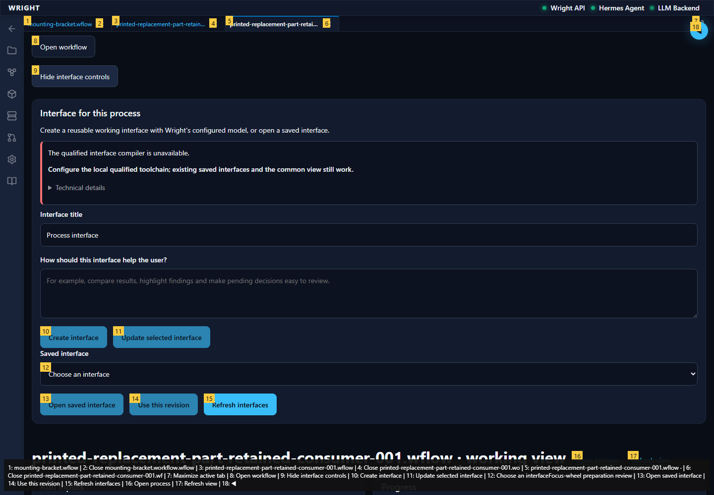
Exact original saved UI/revision selected without generating or compiling.
Expected: Previously generated immutable revision selectable.
Actual: Exact original saved UI/revision selected without generating or compiling.
annotated 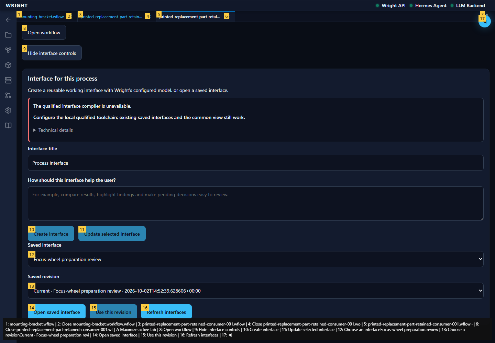
Saved UI renders in its workspace tab with the second run’s single result and waiting review.
Expected: Saved React UI connected to the exact run through the installed bridge.
Actual: Saved UI renders in its workspace tab with the second run’s single result and waiting review.
annotated 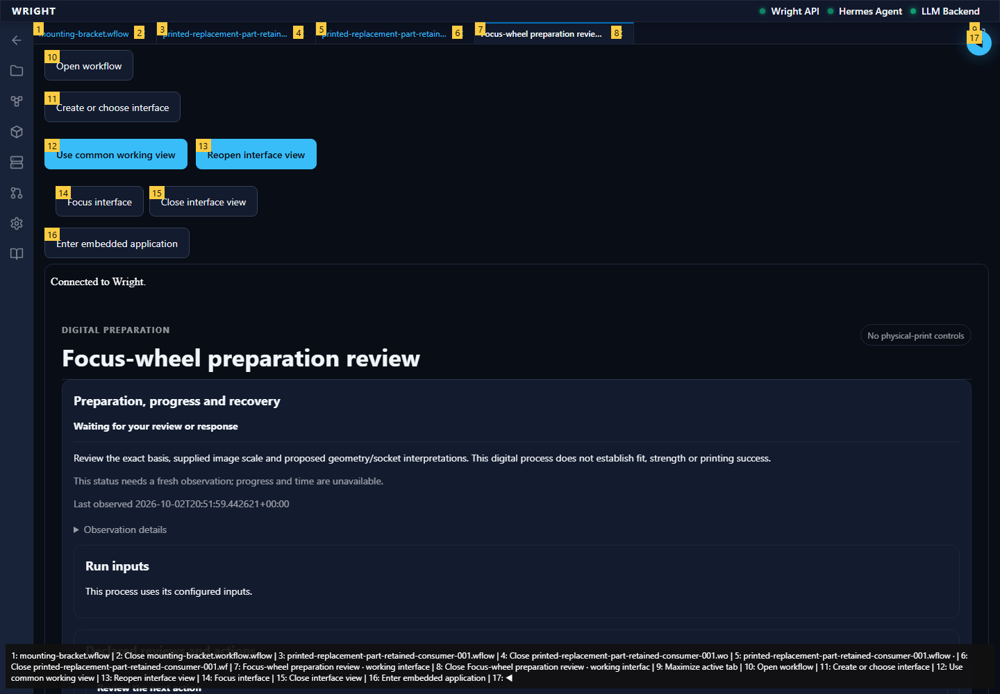
Installed tab restores the same waiting run and saved compiled interface.
Expected: Same run, saved revision and waiting review after reload.
Actual: Installed tab restores the same waiting run and saved compiled interface.
annotated 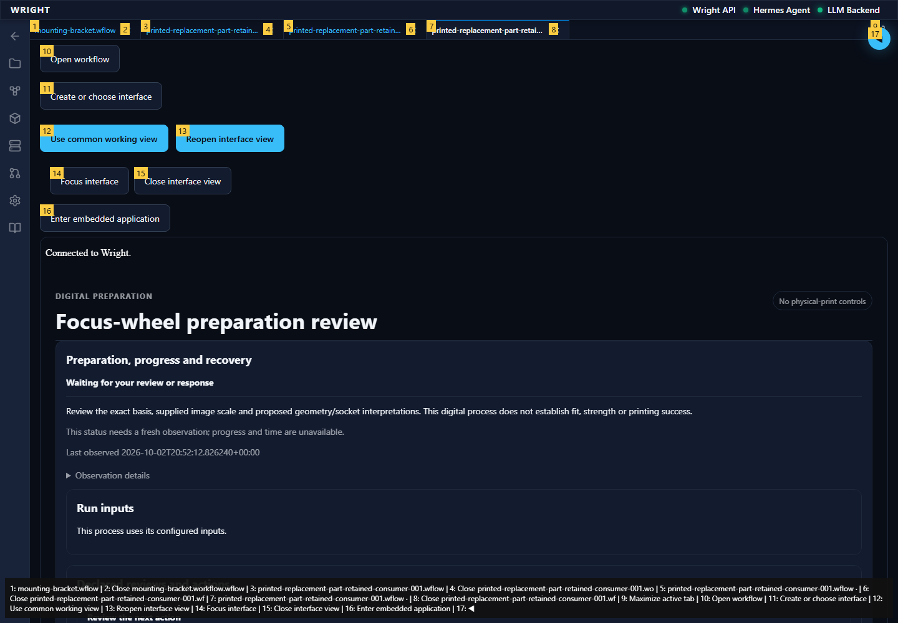